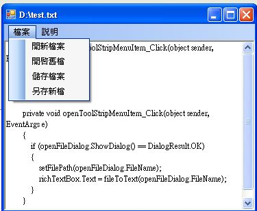

C# 視窗程式：設計文字編輯器
教學錄影：
- C# 檔案處理 -- http://youtu.be/3EyPcAddd70
- C# 文字編輯器 1 -- http://youtu.be/xymT54El53E
- C# 文字編輯器 2 -- http://youtu.be/xz5sKvZjLZI
專案下載：
- 只有介面的版本 (英文) -- https://dl.dropbox.com/u/101584453/cs/code/Editor1.zip
- 只有介面的版本 (中文) -- https://dl.dropbox.com/u/101584453/cs/code/Editor2.zip
- 完整版 -- https://dl.dropbox.com/u/101584453/cs/code/TextEditor2012.zip
執行結果

文字編輯器執行畫面
程式碼
using System;
using System.ComponentModel;
using System.Windows.Forms;
using System.IO;
namespace WindowsFormsApplication1
{
public partial class FormEditor : Form
{
String filePath = null;
public FormEditor()
{
InitializeComponent();
}
public static String fileToText(String filePath)
{
StreamReader file = new StreamReader(filePath);
String text = file.ReadToEnd();
file.Close();
return text;
}
public static void textToFile(String filePath, String text)
{
StreamWriter file = new StreamWriter(filePath);
file.Write(text);
file.Close();
}
private void openFileToolStripMenuItem_Click(object sender, EventArgs e)
{
if (openFileDialog.ShowDialog() == DialogResult.OK)
{
String text = fileToText(openFileDialog.FileName);
richTextBox.Text = text;
filePath = openFileDialog.FileName;
}
}
private void newFileToolStripMenuItem_Click(object sender, EventArgs e)
{
richTextBox.Text = "";
filePath = null;
}
private void saveFileToolStripMenuItem_Click(object sender, EventArgs e)
{
if (filePath == null)
{
dialogSaveFile();
}
else
{
textToFile(filePath, richTextBox.Text);
}
}
private void saveAsToolStripMenuItem_Click(object sender, EventArgs e)
{
dialogSaveFile();
}
public void dialogSaveFile()
{
if (saveFileDialog.ShowDialog() == DialogResult.OK)
{
textToFile(saveFileDialog.FileName, richTextBox.Text);
filePath = saveFileDialog.FileName;
}
}
}
}